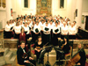

|
Botley Choral Society
Botley Choral Society is a thriving choir of around 100 members, formed in 1923, which relishes in the rich tradition of choral music in this country. Concerts are given three times a year – at Easter, when performances are held at All Saints Church, Botley and another local venue, and either a St. Cecilia-tide or Christmas Concert. In May each year, the choir also takes part in the Winchester and County Music Festival, formed in 1921, by singing with other constituent choirs in either Winchester Cathedral or Romsey Abbey. Director of Music, David Burgess, was appointed Director of Music of the Winchester and County Music Festival in September 2016. The last two years have seen performances of a wide range of music, from a 'Bach - Father and Son' concert to the glorious sound of Choir, Brass and Organ in a concert including Rutter's Gloria and Te Deum. A 'Baroque Fest' of Vivaldi and Pergolesi in April 2017 attracted capacity audiences at both venues and Carl Orff's Carmina Burana is on the menu for December 2017. Professional soloists enhance these performances, along with an orchestra when space permits! The catchment area for Botley Choral Society is wide, embracing Winchester, Southampton, Gosport and the Meon Valley – but the membership unites on a Wednesday evening in its pure enjoyment of singing, which has benefits for the soul and general well-being. The Society is a Registered Charity and a member of Making Music (formerly the National Federation of Music Societies). Registered Charity No. 1085408 Contact the Society Secretary: Sally Arnott Email: enquiries@botleychoral.co.uk Web: botleychoral.co.uk |
Click image to view  |